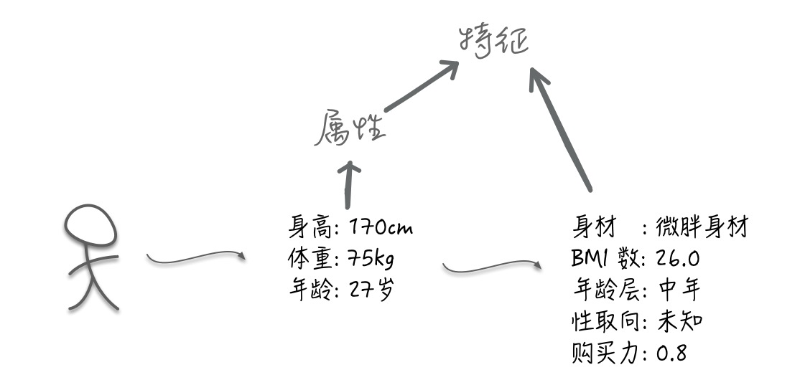

特征处理之(一)：背景知识
数据和特征决定了机器学习的上限，而模型和算法只是逼近这个上限而已！
特征处理之背景知识
在机器学习过程中有一个特别重要的环节那就是特征工程(Feature Engineering)。特征工程 得到的特征决定了一个机器学习任务的最终上限。试想一个上限不高的机器学习任务，再厉害的算法策略又能怎样。又再想一下，上限非常高的机器学习就算再朴素的模型不断调参尝试后，总归能不断获得进步(因为有很高的上升空间)。因此在做机器学习任务的时候可能大部分时间精力需要投入到特征工程中，可见特征工程的重要性。
特征工程（Feature Engineering）泛指从原始数据转换为特征向量的过程。其中包含三大模块: 特征处理，特征选择，特征降维。
本篇主要记录下特征处理的背景知识
先再最前面预留一些问题，如果这些问题都能回答上来那么本篇文章基本也就不用看了省点时间多睡觉
- 什么是特征
- 为什么要进行特征处理
- 特征处理在机器学习过程中处于哪个位置
- 特征处理与特征工程是什么关系
- 特征有哪些类型
- 要如何进行特征处理(在其他”特征处理”文章中细讲)
以下我自己对这些问题的理解，不对请务必要喷，被喷使我成长 o(￣▽￣)ｄ
一、什么是特征
在机器学习任务中，描述/表达一件事物的特性属性数据/抽象结果，称为特征。记得初学的时候，觉得收集的数据不就是特征么。其实这个理解不能说不对，但太浅显，特征是直接作用于我们最终分类(聚类回归等)任务的，为了更好地服务最终任务，特征承载了更多的意义，它需要为了帮助机器的最终任务更好地去描述和表达一件事物。
稍微通俗一点，假设收集了NBA球员的身高数据准备做一些有趣的事情，那么身高数据本身就是一个原始特征，但因为数据连续样本不够等等原因难以很好的利用起来。那么如果将身高数据换算成适当的身高区间数据呢？是不是就能够更好的完成那件有趣的事情了。
二、为什么要进行特征处理
当前数据/特征表达能力不够好或者不能达到模型要求，因此要进行处理。
比如拿到的是图片或者多媒体数据，如果不将原始数据处理成更具有表达性的特征数据，直接处理那些原始数据会造成一系列问题，比如算力不够、特征稀疏等等。再比如为了提升迭代速度，或者评判特征之间的重要性等等原因，也需要对数据进行特征处理。

上述例子收集了NBA的身高数据准备做一些有趣的事情。上面说的将身高换算成适当的身高区间就是一种特征的处理，使得区间内部的身高数据都不会造成不同的影响，但区间与区间之间却有着完全不同的表现，将身高特征的表达能力变得更好更合理了。
另外如果发现收集到的数据有一些NBA人员的身高缺失了？有一些人员的数据是异常的？备选的训练模型还不接受缺失值？也是需要特征处理来解决问题。
三、特征处理在机器学习中处于哪个位置
3.1 特征处理知识框架—机器学习过程
机器学习过程，以我自己的理解，分为了四个部分，从上至下。
- 特征提取: 主要是从一些数据源提取到一些原始特征(也可以叫原始数据)。
- 特征工程: 将上述原始特征，加工成为模型所用的规范化的表达能力强的特征。
- 模型训练: 生成/优化模型，使模型不断拟合上述特征数据
- 结果评价: 对上述产生的模型进行标准的评价和衡量，为优化模型或者特征给出指导意义。
3.2 特征处理知识框架—特征提取和特征工程
特征提取
特征提取包括样本的采集，取样方式，异常数据的清洗等等内容，直接面对的是数据源，比如数据爬虫，日志导出，数据库获取等等。
特征工程
特征工程就是在特征提取的基础上进行加工处理。传说中特征工程有三部曲，就是指:
- 特征处理
- 特征选择
- 特征降维。
本篇以及后续篇章着重的就是第一曲——特征处理。终于引出了文章中心。🤔
特征处理大致包括了对各种原始进行各种计算或者操作，使之更加规范，表达能力更强。特征选择，顾名思义就是在对特征处理之后，通过某些手段，选择对当前模型帮助最大的几个特征来。特征降维，是指面对维度很高的特征时对训练模型会带来很大压力，于是在保证特征表达能力的情况下，降低特征的维度来提高训练的速度和精度。
3.3 特征处理知识框架—再说特征工程
再说特征工程
拿出特征工程再细分聊下，在特征工程中，包含了很多处理方法。
- 无量纲化: 将特征去除量纲，使特征可对比可衡量
- 离散化: 将连续型特征进行分组，使之离散，比如年龄特征处理成年龄段
- 哑编码: 对离散的特征进行编码化
- 缺失值填充: 某些特征数据丢失的情况下想办法填充一个值
- 组合变换: 单个特征表达能力也许不强，但是经过组合后，可能就很强，提升了模型的非线性能力。
3.4 特征处理知识框架—模型训练和结果评价
模型训练
模型训练中，也有大致如下这些步骤:
- 模型选择：面对一个特定的机器学习任务应该如何选择合适的模型。
- 参数调整：在训练样本中将模型调整至最优。还记得这个最优的上限是哪儿。
- 组合模型：在一个特定的任务中将多个模型组合在一起共同完成任务。
结果评价
当模型训练好之后，必须要训练好的模型，进行测试评价。才知道这个模型泛化能力行不行: 给它一波训练集外的新数据它能不能也给出很好的结果。
一般情况下，样本数据都会分成训练集和测试集。训练集用来训练模型，训练后使得模型对这些训练样本达到很好的效果(称为模型拟合了训练集)。但真正看模型是不是好的，不是看它对训练集达到了多高的效果，而是看它对测试集(从未训练过的数据)的效果如何。
如果对训练集本身就效果不好，称为“欠拟合”
如果对训练集效果很好，但是用测试集就效果很差，称为“过拟合”
另外，有一些衡量模型的指标，比如“准确率”，“召回率”，“F1值”，“ROC”，“AUC”等等。
四、特征有哪些类型
4.1 连续性区分
连续性区分方式中，会有几种基本的分类。
- 连续型特征: 比如年龄，身高，温度等等这些连续数值型的特征
- 离散型特征: 比如胖-中-瘦，比如颜色，比如花的种类等等这些有限可枚举的特征
- 二值型特征: 是离散型的特殊情况，只有两个值。比如是否患有癌症。
4.2 来源区分
来源区分的方式，我是来凑数的，四个比三个更平衡嘛。😂
其实也稍微有点道理的:
- 数值型特征: 我们常见的年龄，身高等等
- 文本特征: 在文本中才有的一些特征，比如词频，词向量，TF值等等
- 图像/音频特征: 在图像/音频中才有的特征，比如rgb图像矩阵，灰度值，锯齿，轮廓等等。
4.3 复杂性区分
- 低阶特征: 一些初始的特征，比如统计值等等
- 高阶特征: 在一些初始的特征的基础上，挖掘、分析、组合来得到对模型更好的特征
4.4 动态性区分
- 稳定特征: 一般情况下不会变化的特征，比如人的肤色，汽车马力等等
- 动态特征: 会随着时间空间变化的特征，比如所在地理坐标，噪音值，天气等等
结语
特征处理是在机器学习中占据非常重要的地位，特征工程决定了整个模型的上限，而特征工程中最基础的就是特征处理。本篇主要分享下，特征处理的背景知识，包括特征的概念，机器学习的框架，以及特征处理在其中的位置，和特征的某些分类。
最后最后，再把这些问题抛出来，是否都已经讲清楚了呢
- 什么是特征
- 为什么要进行特征处理
- 特征处理在机器学习过程中处于哪个位置
- 特征处理与特征工程是什么关系
- 特征有哪些类型